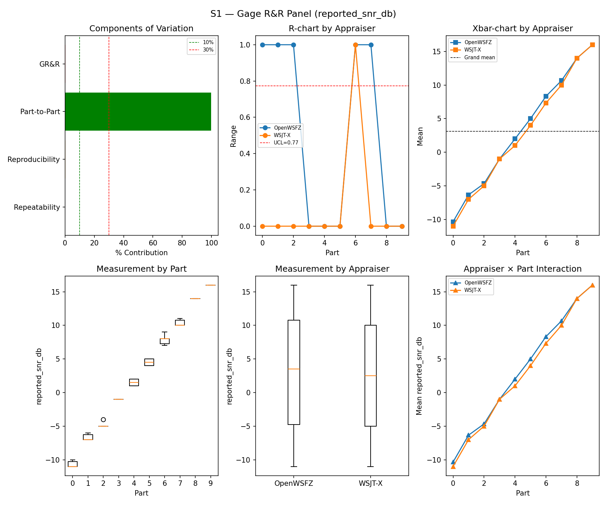
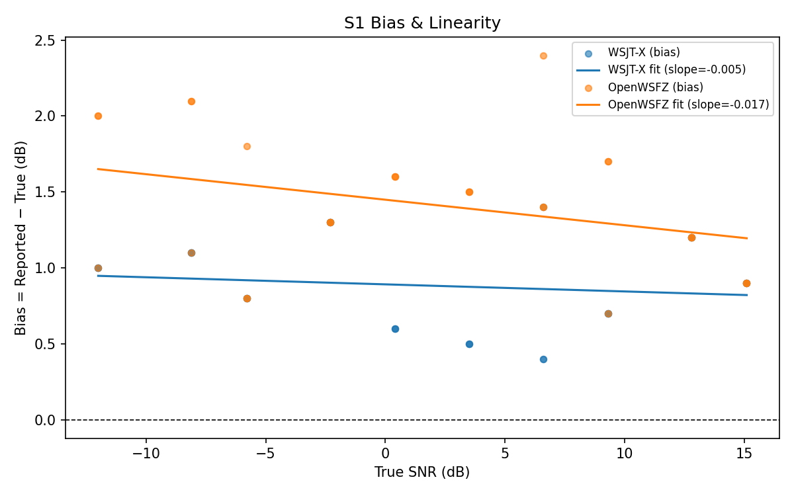

| Field | Value |
|---|---|
| Run date | 2026-07-07 |
| OpenWSFZ SHA (build under test) | df4cc89fc5519bc47e157193c6c1d60de3a9c862 |
| WSJT-X version | WSJT-X 2.7.0 (inferred from binary date 2025-02-04) |
This run validates rr-study-s4-per-message-matching (tasks 1–4, GitHub #59 / qa/rr-study/RR-007.md)
against real live audio, on the current main HEAD (df4cc89). RR-007 found that S4's truth
generation and matcher pooled every message injected into a cycle into one truth row and scored a
match as "decoded any one of N" — a ceiling effect that made S4 structurally incapable of
distinguishing good QRM handling from bad. The prior full-suite run (793a298, 2026-07-04) is the
degenerate baseline this run supersedes for S4: both appraisers scored a perfect TP=15/FN=0,
κ=1.000, PASS — a result flatly contradicted by that same run's S7 data, which showed OpenWSFZ
recovering only 40.00% of co-channel stacks against WSJT-X's 100.00%.
This run's scope is deliberately narrow per tasks.md task 5.1: S1 (rig-health sanity check,
no code path shared with the fix), S4 (the scenario whose truth/matcher logic changed), and
S5 (the negative population the pooled attribute-κ needs). S2, S3, S1b, S7, and S8 were not
run — the design's non-goals state plainly that none of their truth/matching behavior changed, and
re-running them would not test anything this change touches.
793a298. If the fix works, recovery should be
measurably below 100% for at least one appraiser, with independent per-message TP/FN counts
reflecting n_signals × trials, not parts × trials.If S4 no longer shows the ceiling effect (real TP+FN counts equal to n_signals × trials, recovery
< 100% for at least one appraiser), the RR-007 fix is confirmed working with real data, and this
change's implementation tasks (1–4) are validated end-to-end, not just by unit test. Ratifying the
attribute-Kappa gate itself is explicitly not a goal of this run — it remains advisory, and
whether/when to promote it to a hard gate is a separate Captain decision informed by, but not
decided by, this data.
| Field | Value |
|---|---|
| Build under test | df4cc89 (branch main) — rr-study-s4-per-message-matching tasks 1–4 |
| Prior S4 result (pre-fix, degenerate) | 793a298, 2026-07-04 — TP=15/FN=0 for both appraisers, κ=1.000 PASS (see RR-007.md §2.3) |
| Scope this run | S1 (rig sanity), S4 (fix under test), S5 (pooled-κ negative population) |
| Not run this session | S2, S3, S1b, S7, S8 — unaffected by this change (design.md non-goals); most recent S7 reference remains 793a298 |
| WSJT-X reference | 2.7.0 |
| Corpus | Synthetic fixtures only (NFR-021 compliant; no real callsigns) |
| Harness change under test | S4 truth generation now emits one row per injected message (previously one pooled row per cycle); matcher's dead S4-pool-matching branch retired; informational decodable-SNR-restricted κ added (S4_DECODABLE_SNR_FLOOR_DB = -12.0) |
| Component | σ² | %Contribution |
|---|---|---|
| Repeatability | 0.10 | 0.12% |
| Reproducibility | 0.19 | 0.23% |
| Part-to-Part | 80.97 | 99.64% |
| Total GR&R | 0.29 | 0.36% |
| Total | 81.26 | 100.00% |
| Metric | Value | Verdict |
|---|---|---|
| %Tolerance (GR&R) | 32.25% | PASS |
| %Study Var (GR&R) | 5.96% | — |
| ndc | 23 | PASS |

| Appraiser | Mean Bias (dB) | Slope | Intercept | R² | Verdict |
|---|---|---|---|---|---|
| WSJT-X | +0.88 | -0.005 | 0.892 | 0.019 | PASS |
| OpenWSFZ | +1.42 | -0.017 | 1.449 | 0.114 | PASS |

κ is computed over a pooled population: S4 injected messages (truth = present) and S5 signal-free slots (truth = absent), so the truth vector has both classes. κ verdicts below are advisory — the §10 attribute gate is pending Captain ratification of this pooled method.
| Appraiser | TP | FN | FP | TN | Recovery | Specificity |
|---|---|---|---|---|---|---|
| WSJT-X | 75 | 33 | 0 | 120 | 69.44% | 100.00% |
| OpenWSFZ | 71 | 37 | 0 | 120 | 65.74% | 100.00% |
| Pair | κ | 95% CI | Verdict (advisory) |
|---|---|---|---|
| OpenWSFZ_vs_truth | 0.669 | [0.57, 0.76] | FAIL |
| WSJT-X_vs_truth | 0.705 | [0.61, 0.79] | MARGINAL |
| between_appraisers | 0.879 | — | MARGINAL |
| Appraiser | Consistent groups |
|---|---|
| WSJT-X | 87.50% |
| OpenWSFZ | 92.50% |
_S4 positives below the decodable-SNR floor are excluded (S5 negatives unchanged); shown alongside the full-population figures above per STUDY-SPEC.md §9.3's second ratification condition. Informational only — does not affect the §10 gate or the overall verdict.
| Appraiser | TP | FN | FP | TN | Recovery | Specificity |
|---|---|---|---|---|---|---|
| WSJT-X | 64 | 17 | 0 | 120 | 79.01% | 100.00% |
| OpenWSFZ | 64 | 17 | 0 | 120 | 79.01% | 100.00% |
| Pair | κ | 95% CI | Verdict (informational) |
|---|---|---|---|
| OpenWSFZ_vs_truth | 0.818 | [0.73, 0.89] | MARGINAL |
| WSJT-X_vs_truth | 0.818 | [0.72, 0.89] | MARGINAL |
| between_appraisers | 0.931 | — | PASS |
| Appraiser | FP events / slots | Event rate | 95% UB | Decode rate | Verdict |
|---|---|---|---|---|---|
| WSJT-X | 0 / 120 | 0.00% | 2.47% | 0.00% | PASS |
| OpenWSFZ | 0 / 120 | 0.00% | 2.47% | 0.00% | PASS |
Gate (STUDY-SPEC §10, ratified 2026-07-04, R&R-004): the per-slot FP event rate, gated on its one-sided 95% Clopper–Pearson upper bound (PASS iff 95% UB ≤ 6%). The UB is defined for all event counts (≈ 3 / N_slots at 0 events) and bounds the true per-slot FP probability at 95% confidence rather than the Poisson-noisy point estimate. Decode rate is reported for reference only.
| Metric | Scope | Value | Verdict |
|---|---|---|---|
| %GR&R | S1 | 0.4% | PASS |
| ndc | S1 | 23 | PASS |
| Kappa (advisory) | WSJT-X_vs_truth | 0.705 | MARGINAL |
| Kappa (advisory) | OpenWSFZ_vs_truth | 0.669 | FAIL |
| Kappa (advisory) | between_appraisers | 0.879 | MARGINAL |
| FP event rate (95% UB) | S5/WSJT-X | 0/120 slots (event 0.0%; 95% UB 2.47%; decode 0.0%) | PASS |
| FP event rate (95% UB) | S5/OpenWSFZ | 0/120 slots (event 0.0%; 95% UB 2.47%; decode 0.0%) | PASS |
| SNR bias | S1/WSJT-X | +0.88 dB | PASS |
| SNR bias | S1/OpenWSFZ | +1.42 dB | PASS |
Overall verdict: PASS
S1's %GR&R (0.4%), ndc (23), and bias (WSJT-X +0.88 dB, OpenWSFZ +1.42 dB) all clear STUDY-SPEC §10 thresholds with wide margin. The rig is healthy; the S4 result below is attributable to the harness fix under test, not an environment artifact.
The ceiling effect is gone. Compare directly against the degenerate 793a298 baseline:
| Metric | 793a298 (pre-fix) |
df4cc89 (this run) |
|---|---|---|
| WSJT-X TP/FN | 15 / 0 | 75 / 33 |
| OpenWSFZ TP/FN | 15 / 0 | 71 / 37 |
| WSJT-X recovery | 100.00% | 69.44% |
| OpenWSFZ recovery | 100.00% | 65.74% |
| κ (both, vs truth) | 1.000 / 1.000 | 0.705 / 0.669 |
Total positive count rose from 15 (the old parts × trials cycle count) to 108 per appraiser
(n_signals × trials summed across parts — matching the design's acceptance criterion exactly).
Recovery is no longer pinned at 100%, and — critically — the two appraisers are no longer
indistinguishable: OpenWSFZ recovers modestly fewer messages than WSJT-X under S4's density/QRM
conditions (65.74% vs 69.44%), a real, plausible gap in place of the previous statistically
meaningless perfection.
Directional cross-check against S7 (not from the same run — see caveat below): the most recent
S7 data (793a298) showed OpenWSFZ trailing WSJT-X in co-channel recovery (40.00% vs 100.00%,
co_channel family). This run's S4 gap points the same direction (OpenWSFZ behind WSJT-X) though
at a much smaller magnitude (~4 pp vs ~60 pp) — expected, since S4 aggregates across all SNR
levels and densities (parts 0–2 are dominated by easy, high-SNR signals that both apps recover
reliably), while S7's co_channel family isolates the hardest equal-power collision cases
specifically. The two results are consistent in direction, not magnitude, which is the right
relationship for two scenarios measuring related but distinct things.
Caveat: S7 was not re-run in this session (out of scope per task 5.1's minimum set), so this is a cross-scenario, cross-run comparison, not a same-run apples-to-apples check. If a tighter comparison is wanted, task 5.3 recommends a follow-up run including S7.
Restricting S4 positives to the R&R-005 decodable floor (≥ −12 dB) changes the picture measurably:
| Population | WSJT-X recovery | OpenWSFZ recovery | κ (between-appraiser) |
|---|---|---|---|
| Full (all SNRs) | 69.44% | 65.74% | 0.879 (MARGINAL) |
| Restricted (≥ −12 dB only) | 79.01% | 79.01% | 0.931 (PASS) |
Two things stand out. First, both figures rise substantially once sub-threshold-SNR misses are excluded, exactly as §9.3/RR-007 hypothesized — a real share of the full population's disagreement was a decode-capability boundary, not a genuine measurement disagreement. Second, and unexpectedly informative: within the restricted population, WSJT-X and OpenWSFZ show identical recovery (79.01%, TP=64/FN=17 each) — the apps agree closely on which decodable-SNR messages they can pull out of a dense QRM scene, even though recovery is well below 100% (79%, not 100%) — a genuine, non-trivial QRM/density effect S4 was always meant to measure, now visible for the first time.
This figure remains strictly informational per the design; it does not by itself ratify anything. It gives the Captain real numbers for the first time against both of §9.3's stated conditions.
The attribute-Kappa row remains advisory in Section 4's verdict table and did not affect the
overall verdict (PASS, driven by S1's GR&R/bias and S5's FP gate alone) — confirmed both by the
dedicated unit test (test_restricted_population_never_reaches_the_verdict_engine) and now by this
live run's Section 4 table, which lists only the full-population κ rows, not the restricted variant.
STUDY-SPEC.md §6/§9.3 and RR-007.md still need updating with this run's real figures, and
GitHub issue #59 needs a status update distinguishing "the matcher defect is fixed and confirmed
with real data" from "the gate is ratified" (the latter remains undecided, by design).